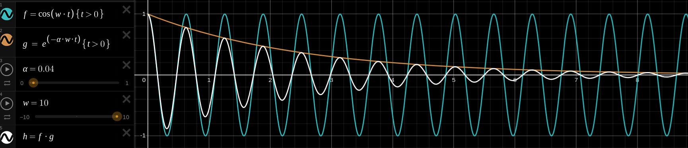

$$
\ddot{e} + K_d\dot{e} + K_pe = 0
$$
This is the differential equation for a mass on a spring with some damping term. The resulting motion is a damped oscillation. This means, the motion of a PD controller's equation is characterised by sinusoidal oscillations whose amplitude is modified by a decaying exponential.
Components
Sinusoidal function
$$
f = cos(\omega t) \quad \{t>0\}
$$
As $\omega$ increases, the rate of oscillations increases.
Exponential decay
$$
g = e^{-\delta \omega t} \quad \{t>0\}
$$
As $\delta$ increases, the rate of decay increases.
Combination
[Ref]
The actual error as a function of time, like the position of a mass on a spring, displays both of these behaviours simultaneously - an oscillation which is modulated by decay. This is not bad as the error is decreasing. But, it would be better for the error to converge to zero much faster with the least amount of oscillations.

By tweaking parameters $\delta, \omega$, the behaviour of the error over time can be tweaked.
PD reparameterisation
Solving the MSD equation leads to the following solution:
$$\begin{align*}
K_p &= \omega^2_n = \frac{1}{T^2} \\
K_d &= 2\delta \omega_n = \frac{2\delta}{T}
\end{align*}$$
$$\begin{array}{ccl}
\omega_n &:& \text{Natural frequency of the error signal} \\
\delta &:& \text{Damping ratio}
\end{array}$$
$$
\ddot{e} + 2\delta \omega_n \dot{e} + \omega^2_n e = 0
$$
In practice, when tuning a controller, it is helpful to think of these coefficients instead of $K_p, K_d$
Summary of the behaviour of the parameters
A big value (close to 1) of damping ratio yields a faster decay. A smaller value (close to 0) constitutes, instead, a slower decay.
A big value of natural frequency (omega) causes high frequency oscillations.